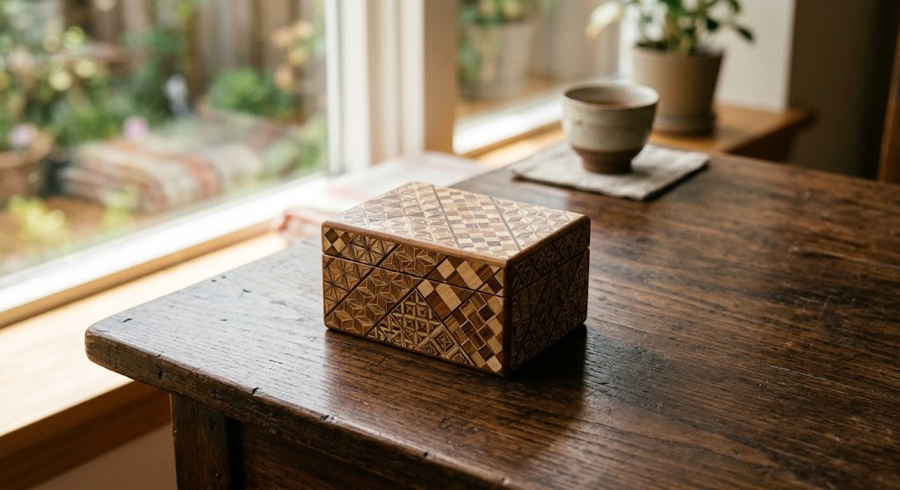

A handmade Hakone yosegi marquetry puzzle box with a 14-move secret mechanism - no visible latch, no lock, just a sequence of sliding panels only the box itself can teach you.

Crafted by yosegi marquetry artisans in Hakone, Japan.
14 moves open it - no key, no visible seam.
Geometric inlay technique from Japan's Edo period.
Doubles as a small, satisfying challenge.
Yosegi is a Japanese wood marquetry technique from the Hakone region, where thin strips of different-colored natural wood are bundled into geometric patterns and sliced into paper-thin veneer.
Puzzle boxes built this way date back to the Edo period, when the sliding-panel mechanism was reportedly used to keep small valuables safe - the box simply looks solid until you know its sequence.
Rings, notes, or other small treasures.
A genuinely different gift for someone who has everything.
A beautiful object that also does something.
It takes a bit of patience at first, but the mechanism is designed to be learnable.
Patterns vary by maker and batch - check the current listing for the specific design.
Yes, it's built as a functional wooden box, not just a display piece.
A handmade Hakone yosegi puzzle box with a 14-move mechanism - see current pricing and availability on Amazon.
Check Price on Amazon →